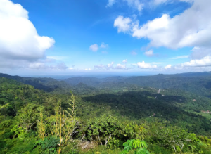
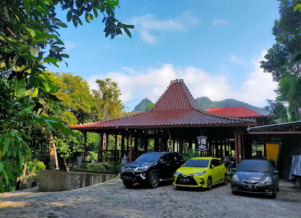
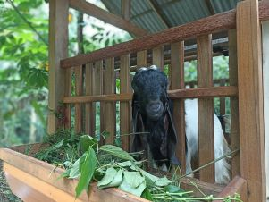
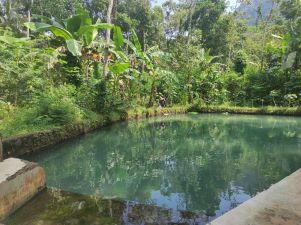
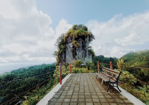
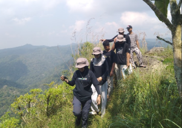
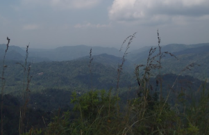
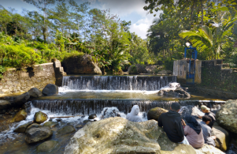

<!DOCTYPE html>
<html lang="en">
  <head>
    <title>Lokasi Potensi Wisata Desa Ngargosari</title>
    <meta http-equiv="X-UA-Compatible" content="IE=edge" />

    <!--Leaflet CSS & JS-->
    <link rel="stylesheet" href="https://unpkg.com/leaflet@1.3.0/dist/leaflet.css" />
    <script src="https://unpkg.com/leaflet@1.3.0/dist/leaflet.js"></script>

    <!--Plugin Search CS & JS-->
    <link rel="stylesheet" href="assets/plugins/leaflet-search/leaflet-search.css" />
    <script src="assets/plugins/leaflet-search/leaflet-search.js"></script>

    <!-- Plugin Geolocation CSS & JS-->
    <link rel="stylesheet" href="https://cdn.jsdelivr.net/npm/leaflet.locatecontrol@v0.76.0/dist/L.Control.Locate.min.css" />
    <script src="https://cdn.jsdelivr.net/npm/leaflet.locatecontrol@v0.76.0/dist/L.Control.Locate.min.js" charset="utf-8"></script>

    <!-- Plugin Mouse Position CSS & JS-->
    <link rel="stylesheet" href="assets/plugins/leaflet-mouseposition/L.Control.MousePosition.css" />
    <script src="assets/plugins/leaflet-mouseposition/L.Control.MousePosition.js"></script>

    <!--Plugin Measurement CSS & JS-->
    <link rel="stylesheet" href="assets/plugins/leaflet-measure/leaflet-measure.css" />
    <script src="assets/plugins/leaflet-measure/leaflet-measure.js"></script>

    <!--Geocoder CSS dan JS-->
    <link rel="stylesheet" href="https://unpkg.com/leaflet-control-geocoder/dist/Control.Geocoder.css" />
    <script src="https://unpkg.com/leaflet-control-geocoder/dist/Control.Geocoder.js"></script>

    <!--Simbologi Judul-->
    <link rel="preconnect" href="https://fonts.googleapis.com" />
    <link rel="preconnect" href="https://fonts.gstatic.com" crossorigin />
    <link href="https://fonts.googleapis.com/css2?family=Ubuntu&display=swap" rel="stylesheet" />

    <style>
      #map {
        height: 2000px;
      }
      /*Judu;*/
      .info {
        padding: 6px 8px;
        font: 14px/16px Arial, Helvetica, sans-serif;
        background: white;
        background: rgba(255, 255, 255, 0.8);
        box-shadow: 0 0 15px rgba(0, 0, 0, 0.2);
        border-radius: 5px;
        text-align: center;
      }
      .info h1 {
        padding: 1px;
        color: rgb(0, 0, 0);
      }
      h1 {
        font-family: "Ubuntu", sans-serif;
        font-size: 35px;
        font-weight: bold;
      }
      h2 {
        font-family: "Ubuntu", sans-serif;
        font-size: 20px;
      }
    </style>
  </head>

  <script src="data/dataarea.js"></script>

  <body>
    <div id="map"></div>
  </body>

  <script>
    var map = L.map("map").setView([-7.66109, 110.15883], 15);
    
    var basemap1 = L.tileLayer("https://{s}.tile.openstreetmap.org/{z}/{x}/{y}.png", {
        attribution: '<a href="https://www.openstreetmap.org/copyright">OpenStreetMap</a> | <a href="DIVSIG UGM" target="_blank">DIV SIG UGM 2020</a>', //menambahkan nama//
      });

    var basemap2 = L.tileLayer("https://server.arcgisonline.com/ArcGIS/rest/services/World_Street_Map/MapServer/tile/{z}/{y}/{x}", { attribution: 'Tiles&copy; Esri | <a href="Latihan WebGIS" target=" blank">Ryan Putro Kusumo</a>' });

    var basemap3 = L.tileLayer("https://server.arcgisonline.com/ArcGIS/rest/services/World_Imagery/MapServer/tile/{z}/{y}/{x}", { attribution: 'Tiles&copy; Esri | <a href="Lathan WebGIS" target=" blank">Ryan Putro Kusumo</a>' });

    var basemap4 = L.tileLayer("https://{s}.tile.opentopomap.org/{z}/{x}/{y}.png", {
      attribution:
        'Map data: &copy; <a href="https://www.openstreetmap.org/copyright">OpenStreetMap</a> contributors, <a href="http://viewfinderpanoramas.org">SRTM</a> | Map style: &copy; <a href="https://opentopomap.org">OpenTopoMap</a> (<a href="https://creativecommons.org/licenses/by-sa/3.0/">CC-BY-SA</a>)',
    });

    basemap1.addTo(map);
       //Judul dan Subjudul
       var title = new L.Control();

    title.onAdd = function (map) {
      this._div = L.DomUtil.create("div", "info");
      this.update();
      return this._div;
    };
    title.update = function () {
      this._div.innerHTML = "<h1>Lokasi Potensi Wisata di Desa Ngargosari</h1>";
    };
    title.addTo(map);
    /* Control Layer */
    var baseMaps = {
      "Open Street Map": basemap1,
      "Esri World Street": basemap2,
      "Esri Imagery": basemap3,
      "Topographic Map": basemap4,
    };

    var overlayMaps = {};

    L.control.layers(baseMaps, overlayMaps, { collapsed: true }).addTo(map);
    

    //Icon
    var Icon = L.icon({
      iconUrl: "icon.png",

      iconSize: [35, 40], // Mengatur besar kecil dari icon
    });

    //--------------------------------Marker------------------------------------

    //Tulangan
    L.marker([-7.64879869848231, 110.165589962058], { icon: Icon })
      .addTo(map)
      .bindPopup(
        "<h2>Bukit Mata Elang</h2> <p>-7.64879869848231, 110.165589962058</p> <p>Bukit Mata Elang merupakan titik tertinggi di Dusun Tulangan yang terletak di bagian Utara dan perbatasan dengan Provinsi Jawa Timur. Pada bukit ini, pengunjung dapat melihat pemandangan Kecamatan Samigaluh dengan indah.</p> "
      );
    
    //Trayu
    L.marker([-7.65724933258106, 110.158296070767], { icon: Icon })
      .addTo(map)
      .bindPopup(
        "<h2>Rajendra Farm </h2> <p>-7.65724933258106, 110.158296070767</p> <p>Rajendra Farm merupakan peternakan yang dapat dijadikan wisata edukasi mengenai hewan ternak. Suasananya yang asri sangat mendukung proses pembelajaran dan pelatihan bagi pengunjung. </p> "
      );

    //Nguntuk2
    L.marker([-7.66560829560363, 110.161703466373], { icon: Icon })
      .addTo(map)
      .bindPopup(
        "<h2>Warung Kopi Joglo Bu Marjuki Samigaluh</h2> <p>-7.66560829560363, 110.161703466373</p> <p>Warung Kopi Joglo ini tak hanya mediakan tempat makan, tetapi juga tempat penginapan. Tempat ini memiliki pemandangan yang memukau dengan asrinya lingkungan Desa Ngargosari.</p> "
      );
    
    //Ngaliyan A
    L.marker([-7.65669244125003, 110.166848803576], { icon: Icon })
      .addTo(map)
      .bindPopup(
        "<h2>Edukasi Kambing Etawa</h2> <p>-7.65669244125003, 110.166848803576</p> <p>Dusun Ngaliyan Gunung A memiliki banyak sekali peternakan yang difokuskan pada ternak kambing. Salah satu jenis kambing yang menjadi unggulan pada dusun ini ialah Kambing Etawa. Pengalaman para peternak kambing etawa di Dusun ini dapat digunakan sebagai sumber pengetahuan mengenai cara ternak kambing etawa.</p> "
      );

    //Ngaliyan
    L.marker([-7.6621924, 110.156628], { icon: Icon })
      .addTo(map)
      .bindPopup(
        "<h2>Embung Cangkring</h2> <p>-7.6621924, 110.156628</p> <p>Embung Cangkring merupakan embung yang berletak di Dusun Ngaliyan. Embung ini dapat dimanfaatkan sebagai tempat rekreasi pemandian jika diolah dengan baik dan benar. Lokasinya yang asri dan rimbun menjadikannya tempat yang cocok untuk dijadikan tempat wisata pengunjung.</p> "
      );

    //Tritis
    L.marker([-7.65822687993637, 110.148812586865], { icon: Icon })
      .addTo(map)
      .bindPopup(
        "<h2>Puncak Widosari</h2> <p>-7.65822687993637, 110.148812586865</p> <p>Batu yang terbentuk di puncak Dusun Tritis ini dinamakan Puncak Widosari. Pemandangan yang indah dari atas bukit ini menjadi daya pikat para pengunjung untuk datang ke tempat ini. Puncak Widosari merupakan tempat yang wajib untuk dikunjungi di Desa Ngargosari.</p> "
      );
    
    //Tegalsari
    L.marker([-7.660072, 110.144947], { icon: Icon })
      .addTo(map)
      .bindPopup(
        "<h2>Watu Amben</h2> <p>-7.660072, 110.144947</p> <p>Watu Amben merupakan batu yang berada di tebing pada titik yang cukup tinggi di Dusun Tegalsari. Dikarenakan ketinggian itu, batu ini dapat dijadikan Spot foto untuk pemandangan Landscape Dusun Tegalsari.</p>  "
      );

    //Pucung
    L.marker([-7.668153075443031, 110.15816097405626], { icon: Icon })
      .addTo(map)
      .bindPopup(
        "<h2>Ledok Tinalah</h2> <p>-7.668153075443031, 110.15816097405626</p> <p>Ledok Tinalah berletak di Sungai Tinalah di dekat perbatasan antar Dusun Pucung dan Petet. Ledok ini membentuk turunan yang menyerupai air terjun sehingga cocok untuk digunakan sebagai tempat bersantai, berendam, fotografi, dan aktivitas lainnya. </p> "
      );
     
    //--------------------------------Marker------------------------------------
    
    //Plugin Search
    var markersLayer = new L.layerGroup().addTo(map);

    //Plugin Geolocation
    L.control.locate().addTo(map);
    

    //Plugin Mouse Position
    L.control.mousePosition({ position: "bottomleft", separator: ",", prefix: "Koordinat : " }).addTo(map);

    //Plugin Measurement
    var measureControl = new L.Control.Measure({
      primaryLengthUnit: "meters",
      secondaryLengthUnit: "kilometers",
      primaryAreaUnit: "hectares",
      secondaryAreaUnit: "sqmeters",
      activeColor: "#FF0000",
      completedColor: "#00FF00",
      position: "topleft"
    });
    measureControl.addTo(map);

    //Mencari lokasi
    L.Control.geocoder().addTo(map);

    //Pop Up Data Area
    var geojson = L.geoJson(dataarea, {
      onEachFeature: function (feature, layer) {
        var popupText = "Dusun: " + feature.properties.DUSUN;

        if (feature.properties.Desa) {
          popupText += "<br/>Desa: " + feature.properties.Desa;
        }
        layer.bindPopup(popupText);
      },
    });
    markersLayer.addLayer(geojson);

    //Scale Bar
    L.control
      .scale({
        maxWidth: 200,
        position: "bottomright",
      })
      .addTo(map);

    //Legenda
    L.Control.Legend = L.Control.extend({
      onAdd: function (map) {
        var img = L.DomUtil.create("img");
        img.src = "legenda.png";
        img.style.width = "300px";
        return img;
      },
    });
    L.control.Legend = function (opts) {
      return new L.Control.Legend(opts);
    };
    L.control.Legend({ position: "bottomleft" }).addTo(map);

    //Watermark
    L.Control.Watermark = L.Control.extend({
      onAdd: function (map) {
        var img = L.DomUtil.create("img");
        img.src = "SIG.png";
        img.style.width = "200px";
        return img;
      },
    });

    L.control.watermark = function (opts) {
      return new L.Control.Watermark(opts);
    };

    L.control.watermark({ position: "bottomright" }).addTo(map);
  </script>
</html>
